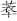

《贰臣传》对龚鼎孳的明朝经历，记载比较简单：
龚鼎孳，江南合肥人。明崇祯七年进士，授兵科给事中。十六年，大学士周延儒罢归，旧辅王应熊赴如。将至，鼎孳疏劾：“应熊结纳延儒，营求再召。政本重地，私相援引，延儒甫出，应熊复来，天下事岂堪再误？”疏入，留中未下。会延儒被逮在道，不即赴，冀应熊先入，为之解。庄烈帝知之，命应熊归，赐延儒死。时兵部尚书陈新甲获罪弃市，鼎孳又疏诋吕大器为陈新甲私人，不宜令总督保定山东河北，忤旨，镌秩。[12]
主要讲了他入京担任谏职以后的两件事，一件得逞，一件失手。周延儒因他检发而死，随后参劾吕大器，却不为崇祯皇帝所喜，反将自己送入监狱。
这时，已是其明朝宦涯的尾声。他于崇祯七年（1634）登进士，翌年，放了湖广蕲水知县。“流寇蔓延，江北州县多陷。鼎孳官蕲七载，日与寇相持，发号施令，威惠整肃，城得无恙。”[13]那阵子，鄂皖一带情势甚紧，到处岌岌可危，大批士民逃亡（何如宠、阮大铖都是此时过江避白下）。龚鼎孳这七年县官，当得实属不易，而“城得无恙”简直要算奇迹。
所以他的升迁京城，是“政声”使然。而对于来到中央，未及而立之年的龚鼎孳深受鼓舞，高度亢奋。“一月中，疏凡十七上”[14]。我们不清楚他是急于脱颖而出，还是对新职守一片赤诚，抑或两者兼而有之，总之用力过猛，如同打了鸡血，或上足劲的发条。他崇祯十四年（1641）秋入京，仅两年，便因冒躁轻倨获罪下狱。
了解他这一段的行状，主要可阅李清《三垣笔记》。
李于崇祯十五年春末补刑科给事中，从家乡兴化动身来京，比龚略晚几个月。他们分属刑、兵二科，但同居言路，所以不光亲自打交道，更有不少从旁观察的机会。在《三垣笔记》中卷，涉龚记述有十余条，为卷中被提及者之最，反映了龚当时的活跃。
但李清对他的印象，相当不好：“每遇早朝，则自大僚以至台谏，咸啧啧附耳，或曰曹纠某某，或曰龚纠某某，皆畏之如虎。”[15]曹是曹良直，与龚同为兵科给事中，两人关系密切。李清用“险刻”形容他们，说他们“日事罗织”[16]，联系合肥县志“一月中，疏凡十七上”的记载，颇对得上号，不过“罗织”之词想必言重了。无中生有、多方构陷才可称“罗织”，那是很坏的做法和很恶的居心。从龚两次为我们所知的弹劾看，参周延儒，不无事实，对吕大器则是阻止有关他的一项任命，既谈不上构陷，也是他身任给谏的分内之事。
然而，两次他都属于推波助澜。参周延儒是在崇祯将其罢相后，纠吕大器也是因为陈新甲已经失势。就此，希意干进的嫌疑是脱不了的。我们感到，作为新从地方提拔上来的人，他有急于立足、一炮打响的冲动。为人稳重、平和的李清，认为这不是什么好品质，也有他的道理。
不过，李清对他的反感，连同他到北京后的躁动表现，其实别有原因，个人气质并非主要。
那便是明末政坛甚嚣尘上的党派政治。从万历年起，这种因素之于明朝，既病入膏肓、无可救药，又可谓挟雷掣电、虎虎生风。它就是这样有深刻两面性的东西。一面，王朝为此内耗不休、大伤筋骨，多少事情滞碍难行，皇帝徒呼奈何；另一面，反映了新的政治意识和格局，士大夫开始从传统的君权奴仆与工具，向带有独立性的政治角色转化。后来人们相信，“门户”是明朝亡国主因之一。其实，换一下时间、背景条件，“门户”的结果完全可能是另外的样子，比如带来政治改革。历史的两面性，中间往往只隔一层。
李清是一位爱国者，更确切地说，是比较传统的忠君者。他毕生保持这种情怀，明亡后闭门著述，凡忠事明室者他都崇敬有加（如左懋第），凡曾淆乱国家者则概予指斥。所以他的著作才有如此奇特情形：既对十足的奸佞（如马、阮等辈）丑行有闻必录，也对作为改革势力的东林、复社啧有烦言。他自认无党无派，“存公又存平”。
他既有此立场，龚鼎孳却刚好相反。龚鼎孳有鲜明、强烈的党派倾向。综合《三垣笔记》的记述，我们明白地看到，龚鼎孳一到北京，就深深卷入党派政治：
予与韩给谏如愈，每谒吴辅甡，则曹给谏良直、龚给谏鼎孳必先在坐……两人与甡密，人有以此疑甡者。[17]
龚给谏鼎孳日趋吴辅甡门，江南诸人啧啧，疑其构周延儒隙。[18]
当时，首辅周延儒、次辅吴甡各有派，称“江南党”、“江北党”。龚鼎孳作为江北人，加入吴甡一派，十分卖力，以致人们私下认为，周、吴矛盾其实是这类人挑唆起来。为此李清举证说，“吴辅甡既奉旨杜门待罪，予往谒，适龚给谏鼎孳至，曰：‘必首辅所为。’”吴甡却“正色”否认，李清评曰：“方知两辅水火，皆若辈构成也。”[19]后来，吴甡戴罪出京，行前对李清说：“幸语龚给谏，弗言及首揆，人将谓吾教之。”[20]竟似对龚颇为头疼。
明末政坛门户，因正邪而起，事情发展却不那么简单。政治从来长着理想主义和功利主义两条翅膀，二者你中有我、我中有你，为着高远目的，手段上的卑劣是并不拒绝的。所以党派之间政见之争，很容易演为纯粹的争权夺势，以致权势反而变成主题，彼此都不择手段。这在周延儒身上，表现就很突出。其崇祯十四年二度为相，后面有复社支持，可他暗中也接受了阮大铖贿赂，答应上台后为之谋复出，后因阻力太大，只做到起阮的朋友马士英为凤督，而这也直接种下了弘光朝祸根。恐怕不只周延儒如此，那些身居高位的大僚老手，眼里都有时势，知道妥为利用。吴甡一面信用龚鼎孳，一面背地里又对李清作种种与己无关的表示，就很见圆滑和策略。
易抱理想主义的，多是涉世不深的青春派。我不知道龚鼎孳在党派斗争中踔厉风发，是否抱功利目的，但李清讲述的这样一件事，让人感到他当时满脑子正邪之念：
一日，鼎孳言及逆案，振铎佯曰：“能相示否？”鼎孳出诸袖，振铎故指龚肃问曰：“若为谁？”鼎孳曰：“予嫡伯也，最无行。”振铎一笑。[21]
旁人想借他嫡亲伯父身附逆案，予以讥讽，他竟不以为意，脱口表示对伯父的唾弃，可见他心目中标准，简单到只有清、浊二字。这种对“正义”的自命与痴迷，在年轻人常有，有时会达六亲不认的地步。我体会吴甡临行对李清一番话，也有嫌龚偏激太过的意味，已到连吴甡自己都不能驾驭的地步。吴不主张对周延儒“痛打落水狗”，龚鼎孳却一意孤行，吴感到无奈，想借李清之口撇清与龚鼎孳日后所为的干系。
理想主义不一定是褒辞。理想主义的祸害，有时不在朽腐现实之下。我猜龚鼎孳在兵科给事中任上的狂热，受蛊于理想主义，主要是李清对他“日事罗织”的解读不能显其情怀，以及促他如此行事的时代背景。我觉得明代末年的气氛、格调，与我们上世纪六七十年代是有些相似的；一班自命正义而苦闷、叛逆的知识青年，呼朋引类、五湖四海、啸聚串联。这个运动或潮流，已持续十年以上，而过去并没有龚鼎孳的身影。壬午年（1642）春，他终于出现在苏州。此行是为复社“虎阜大集”而来，这并非著名的壬申年（1632）“虎丘大会”。那次大会，复社实现了全国统一（“合诸社为一”），并“定名复社”。[22]那时，龚鼎孳还是偏远小县的县令，既无机缘也无资本与金陵、姑苏、云间等地一呼百应的学生领袖结交。眼下则不同，他很好地借跨入京城之机，凌厉出击，把自己打造成青年政治精英和党社运动冉冉升起的新星。我们在杜登春《社事始末》所载与会者中，见到了“龚鼎孳”三个字：
壬午之春，又大集虎阜。维扬郑超宗先生元勋、晋松李舒章先生雯为主盟，桐城方密之先生以智……合肥龚孝升先生鼎孳、溧阳陈百史先生名夏……查伊璜先生继佐……郴臣曹秋岳先生溶……楚中杜于皇先生濬……余澹心先生怀……维扬冒辟疆先生襄……暨前所称诸先生之子弟、云间之后起，皆与焉；其他各省名流，余不能悉得之。[23]
这些人，有不少做了他日后一生的朋友。这次集会的前一年，复社领袖张溥刚因暴病去世，但复社势焰并不稍减，“西铭（张溥之号）之变，海内会葬者万人”[24]。当他被这组织引为同志且揖于上座的时候，我觉得完全找到了他在北京亢奋激昂、砥砺奋前的由来。他追求这种认可，渴念那样的加入。
作为后起之秀，他有时不我待、只
争朝夕的心态。但一味奋前，是把自己送入监狱。这个情节，没什么内容可以挖掘。崇祯是以喜怒无常而出名的皇帝；高兴，就纳你“嘉言”，不高兴，就嫌你碍事，关一阵子甚至砍头。被他杀掉的大臣，首辅两人，督抚以上十一位。不过，他的好处是脾气虽然反复，并不以摧折为乐，手下也没有纪纲、许显纯一类如狼似虎的大酷吏。龚鼎孳下了狱，罪不至死，无性命之忧，在狱中应该没有太遭罪。而且正像入狱一样，四个月后，又突如其来地放出来，毫发无伤。短暂的牢狱之灾，看上去也只是人生一次小波折。